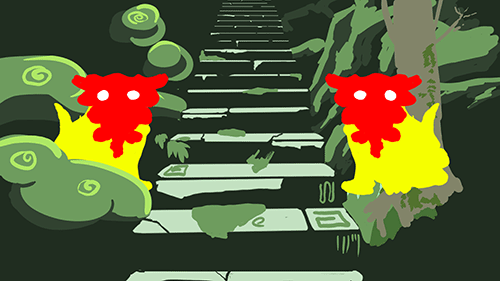
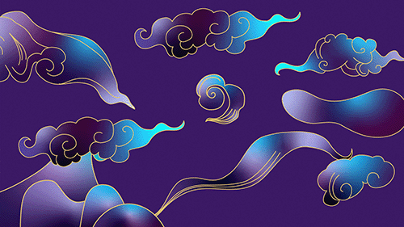
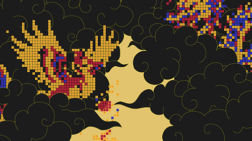

The WRG Digital Call-Out invites emerging artists and designers to respond to a theme and create an animation/artwork for the White Rabbit Gallery website landing page. There will be two digital call-outs each year, with each round’s theme aligning with a new exhibition at the White Rabbit Gallery.
I knew about this call out for a while, and had dabbled with some ideas that fizzled out. So after the overview map was handed in I decided I would dedicate a week to creating something for the brief. My goals were:
For me, Mythology is very story driven, tales of characters, creatures and landscapes, so I wanted to try and create something illustrative. My mind immediately went to a staircase I came across in the forest of the mountains in Japan. There was nothing, nobody around, I didn't really know where I was and out of nowhere this mossy stone staircase lined with stone lanterns, statues of lions and giant straight trees appeared. It felt like entering another world, a spirit world, a world of mythology. So at first I tried to capture that feeling, trying to sketch out stairs and characters and a forested landscape in photoshop that I could animate in some way. *** Eventually this approach led to nowhere so I stopped working on it.

A few weeks went by where this project was in the back of my mind and I would occasionally see some other work or have an idea of what I could do, I decided to try and simplify the visuals, have creatures or characters appearing through Chinese style clouds. I started working in Illustrator as I knew that would give me more control later on in after effects.

At this point it was one week out from the due date and I had scarcely anything to show for it, but I decided to knuckle down and focus on this video for a week to see what I could get done. Perhaps from the work I've been doing outside this project, perhaps from seeing other works throughout the days, I had realised I could use a mosaic/pixel effect to "technologize" the characters of the video, and this was something I knew how to do, was relatively simple, and would somewhat hide the rushed animation of the one week left. I first made a quick mockup using images found online to make sure it worked and was an aesthetic I liked. One thing I realised through this is that I preferred when the pixels were more random, more scattered with less big blocks of one colour. This could be created by making shapes with gradients and adding noise to shift certain pixels here and there and keep them mixed up. I also made a quick test of a bird illustration in Illustrator and realised I needed to keep details large and obvious since so much information was being lost to the big pixels.

I then decided to test the animation process. I created a puppet for the dragon in Illustrator, coloured it with gradients, and moved into after effects. As I had drawn the dragon as a bunch of connected joints, I did a simple rotate animation along its body to achieve the snake like movement attributed to this style of dragon. Then I followed a tutorial to get the pixelated effect working. I was very happy with the effect, but not as happy with the animation of the dragon's body, and wasn't sure what the best approach was to smoothing it out.
Next came figuring out the clouds, I brought the illustrator files in and tried some simple animation moving towards the screen. This was where I panicked and felt like I didn't know how to finish this video. The next day I decided I needed to find a new approach so did some research on effects or processes that would achieve the mood I was looking for. I found a tutorial for making a 3d parallax tunnel of clouds and decided that would be perfect. At this point I had all the basic elements sorted out and just had to create some more characters (the birds and wukong) to fill out the remaining time in the video. I also had to decide what colours things should be, this was a bit of a challenge for me.
Overall I was happy that I was able to get to an outcome I was mostly happy with in a short period of time.
Positives:
Negatives: